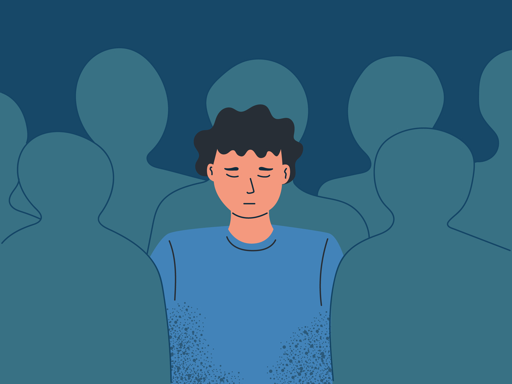
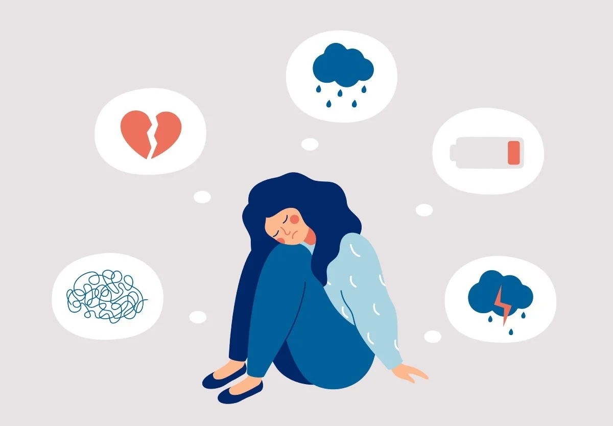

is a mood disorder that causes a persistent feeling of sadness and loss of interest.
Also called major depressive disorder or clinical depression, it affects how you feel, think and behave
and can lead to a variety of emotional and physical problems. You may have trouble doing normal day-to-day activities,
and sometimes you may feel as if life isn't worth living.

Sypmtoms
Although depression may occur only once during your life, people typically have multiple episodes.
During these episodes, symptoms occur most of the day, nearly every day and may include:
Feelings of sadness, tearfulness, emptiness or hopelessness
Angry outbursts, irritability or frustration, even over small matters
Loss of interest or pleasure in most or all normal activities, such as sex, hobbies or sports
Sleep disturbances, including insomnia or sleeping too much
Tiredness and lack of energy, so even small tasks take extra effort
Reduced appetite and weight loss or increased cravings for food and weight gain
Anxiety, agitation or restlessness
Slowed thinking, speaking or body movements
Feelings of worthlessness or guilt, fixating on past failures or self-blame
Trouble thinking, concentrating, making decisions and remembering things
Frequent or recurrent thoughts of death, suicidal thoughts, suicide attempts or suicide
Unexplained physical problems, such as back pain or headaches

Causes
It's not known exactly what causes depression. As with many mental disorders,
a variety of factors may be involved, such as:
Biological differences. People with depression appear to have physical changes in their brains.
The significance of these changes is still uncertain, but may eventually help pinpoint causes.
Brain chemistry.Neurotransmitters are naturally occurring brain chemicals that likely play a role in depression.
Recent research indicates that changes in the function and effect of these neurotransmitters and how they interact with
neurocircuits involved in maintaining mood stability may play a significant role in depression and its treatment.
Hormones.Changes in the body's balance of hormones may be involved in causing or triggering depression.
Hormone changes can result with pregnancy and during the weeks or months after delivery (postpartum) and from thyroid problems,
menopause or a number of other conditions.
Inherited traits.Depression is more common in people whose blood relatives also have this condition.
Researchers are trying to find genes that may be involved in causing depression.